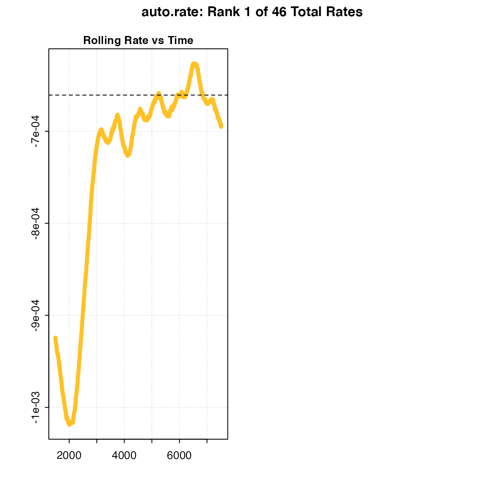
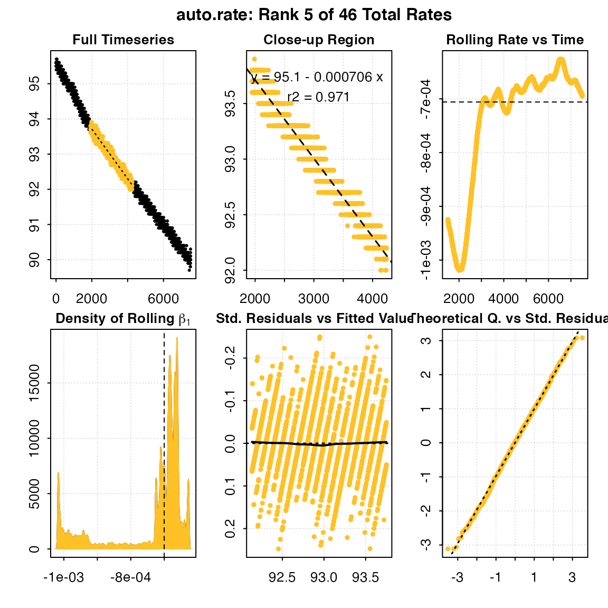
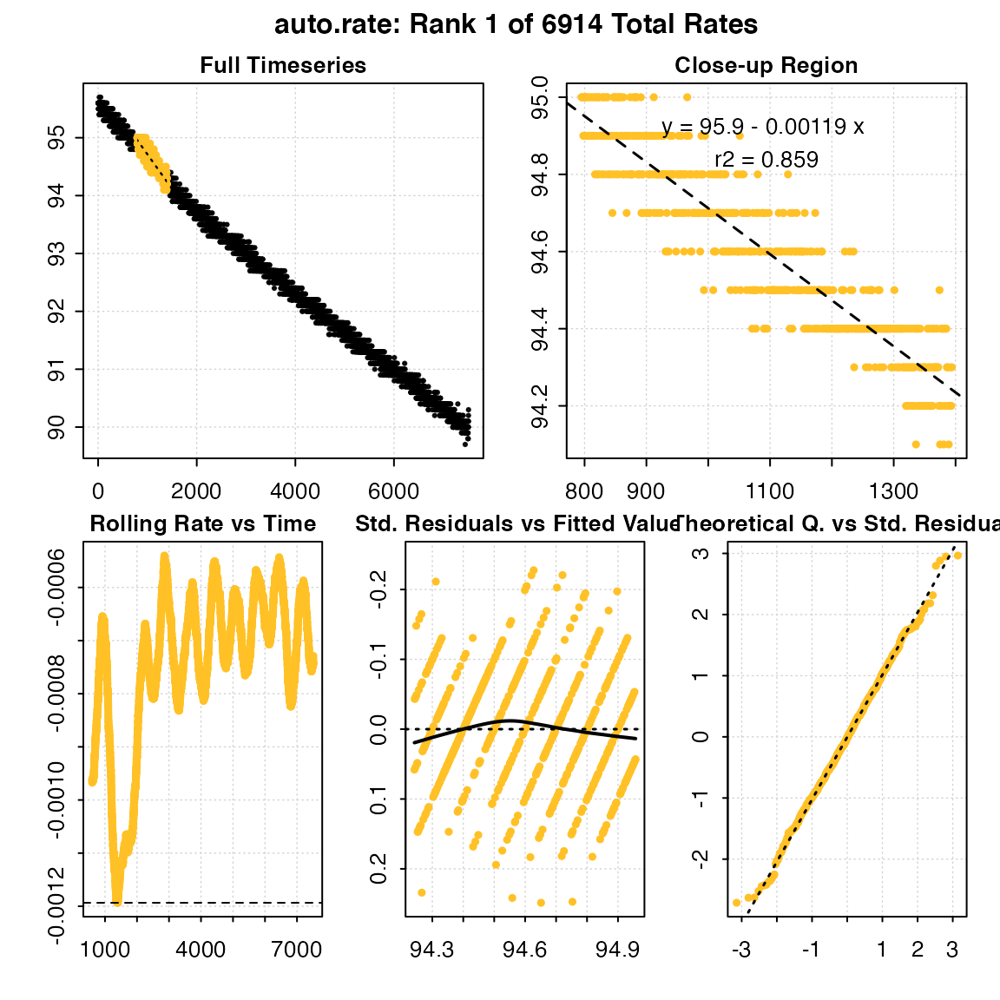
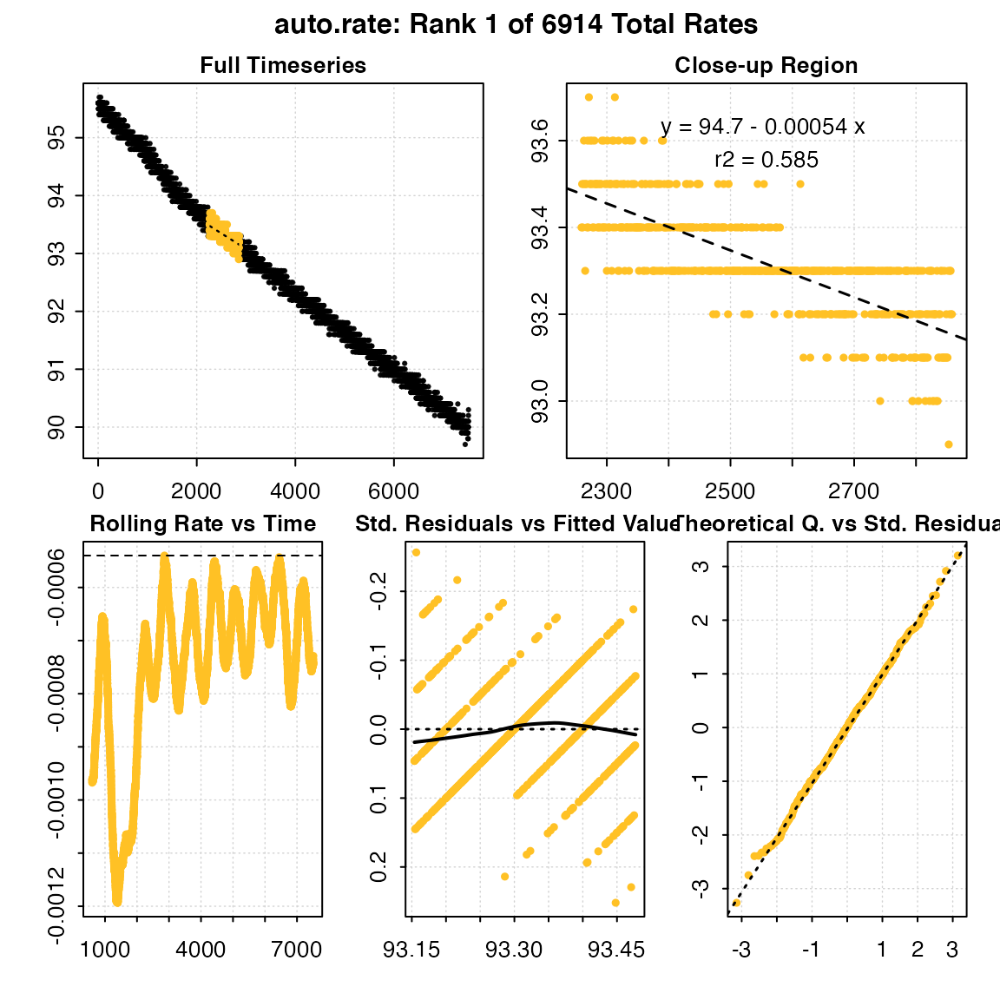

In respirometry, we often want to report oxygen uptake rates that represent experimentally important stages or physiological states. These include:
The problem is that for large datasets, identifying these regions is difficult, and if selected visually, are subject to bias and lack of observer objectivity. Other methods, such as fitting multiple, fixed-width linear regressions over the entire dataset to identify regions of minimum or maximum slopes is computationally intensive, and slopes found via this method highly sensitive to the width chosen, especially if the specimen’s metabolic rate changes rapidly.
Here we present auto_rate(), a function in the respR package that uses rolling regression techniques to automatically detect most linear, maximum and minimum rates within a dataset in a statistically robust, objective manner.
In this vignette we detail how auto_rate() works, and how it can be used to extract rates from respirometry data. In additional vignettes we show how we have tested this method against simulated data, and also compare its performance against another linear detection method. We show it performs extremely well on large datasets in determining linear rates. Importantly, auto_rate() has been optimised to be extremely fast. Other methods on large datasets can take minutes, hours or even days to run. We show how auto_rate() can reduce this wait by orders of magnitude, literally fitting tens of thousands of regressions and detecting linear regions in seconds.
This illustrates the main processes involved in auto_rate():
auto_rate() works by performing an optimised rolling regression on the dataset. A kernel density estimate is performed on the rolling regression output and the kernel bandwidth used to re-sample linear regions of the data for re-analysis.
The function auto_rate() uses a novel method of combining rolling regression and kernel density estimate algorithms to detect patterns in time series data. The rolling regression runs all possible ordinary least-squares (OLS) linear regressions \((y = \beta_0 + \beta_1 X + \epsilon)\) of a fixed sample width across the dataset, and is expressed as: \[y_t(n) = X_t(n) \beta (n) + \epsilon_t(n), \ t = n,\ ...,\ T\] where \(T\) is the total length of the dataset, \(n\) is the window of width \(n < T\), \(y_t(n)\) is the vector of observations (e.g. oxygen concentration), \(X_t(n)\) is the matrix of explanatory variables, \(\beta (n)\) is a vector of regression parameters and \(\epsilon_t(n)\) is a vector of error terms. Thus, a total of \((T - n) + 1\) number of overlapping regressions are fit. These are then ranked to obtain maximum and minimum values. An interval-based rolling regression can be selected (method = "interval"), and it automatically selects non-overlapping sections of the data for regressions, but all other methods fit overlapping regressions.
Additional analytical techniques are automatically applied when we use auto_rate() to detect linear sections of the data (the default of method = 'linear'). First, we take advantage of the key assumption that linear sections of a data series are reflected by stable parameters across the rolling estimates, a property that is often applied in financial statistics to evaluate model stability and make forward predictions on time-series data (see Zivot and Wang 2006). We use kernel density estimation (KDE) techniques, often applied in various inference procedures such as machine learning, pattern recognition and computer vision, to automatically aggregate stable (i.e. linear) segments as they naturally form one or more local maximums (“modes”) in the probability density estimate.
KDE requires no assumption that the data is from a parametric family, and learns the shape of the density automatically without supervision. KDE can be expressed as: \[\hat{f}(x) = \frac{1}{nh^d}\sum_{i = 1}^{n} K \left(\frac{x - X_i}{h} \right)\] where \(f\) is the density function from an unknown distribution \(P\) for \(X_1,...,X_n\), \(K\) is the kernel function and \(h\) is the optimal smoothing bandwidth. The smoothing bandwidth is computed using the solve-the-equation plug-in method (Sheather et al. 1996, Sheather and Jones 1991) which works well with multimodal or non-normal densities (Raykar and Duraiswami 2006).
We then use \(h\) to select all values in the rolling regression output that match the range of values around each mode (\(\theta_n\)) of the KDE (i.e. \(\theta_n \pm h\)). These rolling estimates are grouped and ranked by size, and the upper and lower bounds of the data windows they represent are used to re-select the linear segment of the original data series. The rolling estimates are then discarded while the detected data segments are analysed using linear regression.
By default, auto_rate rolling regression uses a window value in rows of 0.2 multiplied by the total length of the number of samples, that is across a rolling window of 20% of the data. This can be changed using the width argument to a different proportion relative to the total size of the data (e.g. width = 0.1). If not a value between 0 and 1, the width by default equates to a fixed value in rows (e.g. width = 2000, by = "row"), or can be set as a fixed value in the time metric (width = 3000, by = "time").
It is important to note that the width determines the exact width of the data segments produced for max, min and interval rates. This allows the user to consistently report results across experiments, such as reporting the maximum or minimum rates sustained over a specific time period.
Importantly however, the width does not restrict the maximum width of the segments produced for linear detection. We advise users to use caution when changing the width argument if using method = "linear". Choosing an inappropriate width value tends to over-fit the data for rolling regression.
Below, we show the differences in the shape of the rolling regressions when using the default width = 0.2 versus a value of 0.6 with the dataset sardine.rd:
# Perform linear detection; default width (when not specified) is 0.2:
normx <- auto_rate(sardine.rd, plot = FALSE)
# Perform linear detection using manual width of 0.6:
overx <- auto_rate(sardine.rd, plot = FALSE, width = .6)
# Plot ONLY the rolling regression plots for comparison:
par(mfrow = c(1, 2), mai = c(0.4, 0.4, 0.3, 0.3), ps = 10,
cex = 1, cex.main = 1)
respR:::plot.auto_rate(normx, choose = 3) ## CHANGE WHEN IN MASTER BACK TO REGULAR PLOT
#>
#> # plot.auto_rate # ----------------------
#> Done.
respR:::plot.auto_rate(overx, choose = 3)
#>
#> # plot.auto_rate # ----------------------
#> Done.Under perfectly linear conditions, we would expect a rolling regression output plot such as this to consist of a straight, horizontal line. Since KDE automatically aggregates stable values, a poor selection of the width value may result in a badly-characterised rolling estimate output. In the example presented above, while the default width showed a pattern of relative stability in rate after 3,000 seconds, that information was lost when a width of 0.6 was used. Thus, the KDE technique would not have had the appropriate information necessary to correctly detect any linear patterns in the same data.
By default, auto_rate() identifies the most linear region of the data (i.e. method = "linear"):
x <- auto_rate(sardine.rd)This represents the most consistently linear region, that is most consistent rate observed during the experiment. It does this in a statistically rigorous manner, which removes observer subjectivity from choosing which rate is most appropriate to report in their results. It calculates these most linear rates across all possible data window widths, so this also removes the need to the user to specify this. It is a statistically robust way of indentifying and reporting consistent rates in respirometry data.
Generally, auto_rate identifies multiple linear regions and ranks them, and by default the highest ranked one is returned. However, as a fully automated, unsupervised method of identifying linear data it is fallible, and the results should always be inspected and explored. In this case the function has identified a total of 46 linear regions:
print(x)
#>
#> # auto_rate # ---------------------------
#> Data is subset by row using width of 1502
#> Rates were computed using 'linear' method
#> 46 linear regions detected in the kernel density estimate
#>
#> Rank 1 of 46 :
#> Rate: -0.000660665
#> R.sq: 0.982
#> Rows: 3659 to 6736
#> Time: 3658 to 6735The first rate result looks good: it has a high rsq, is sustained over a duration of 50 minutes, and the rate value of -0.00066 is consistent with the other results. However in some cases, other ranked results may better answer the question being asked of the data, in this case be more representative of the metabolic rate metric being investigated.
All ranked results can be inspected in the $summary data frame:
head(x$summary, n = 10)
#> row endrow time endtime intercept_b0 rate_b1 rsq
#> 1: 3659 6736 3658 6735 94.94254 -0.0006606650 0.982
#> 2: 2242 5543 2241 5542 95.06588 -0.0006875585 0.986
#> 3: 3628 7164 3627 7163 94.94880 -0.0006618145 0.987
#> 4: 1578 4236 1577 4235 95.13136 -0.0007082357 0.979
#> 5: 1947 4236 1946 4235 95.12355 -0.0007059132 0.971
#> 6: 1578 4236 1577 4235 95.13136 -0.0007082357 0.979
#> 7: 601 1969 600 1968 95.73380 -0.0010465248 0.961
#> 8: 1578 4196 1577 4195 95.13302 -0.0007089134 0.978
#> 9: 5050 6613 5049 6612 94.75424 -0.0006283802 0.929
#> 10: 5123 6507 5122 6506 94.70348 -0.0006194828 0.912Here, the 7th ranked result, while being a highly linear region, is conspicuously higher in rate value and occurs close to the start of the experiment. If we were examining standard or basal metabolic rates, we would probably want to exclude this one, as it suggests the specimen has not acclimated to the chamber. So an investigator may choose to use a result from the top ranked one, or select several and take a mean of the resulting rates. For example, they may exclude all below a certain rsq, or only the top nth percentile of results, or exclude those from the early stages of the experiment. A function to do this is in preparation, but for now the results can be explored using the $summary data frame, and additional results can be printed and plotted using pos:
print(x, pos = 5)
#>
#> # auto_rate # ---------------------------
#> Data is subset by row using width of 1502
#> Rates were computed using 'linear' method
#> 46 linear regions detected in the kernel density estimate
#>
#> Rank 5 of 46 :
#> Rate: -0.0007059132
#> R.sq: 0.971
#> Rows: 1947 to 4236
#> Time: 1946 to 4235
plot(x, pos = 5)
#>
#> # plot.auto_rate # ----------------------
#> Done.Any rate value determined after this can be saved as a variable, or entered manually as a value in the adjust_rate and convert_rate steps.
auto_rate() can also be used to detect the maximum and minimum rates over a fixed sample width. This can be a proportion of the dataset (e.g. the default width = 0.2, by = "row", or 20% of the data), or if not between 0 and 1 represents a fixed row width (e.g. width = 400, by = "row") or fixed period of time (e.g. width = 600, by = "time"). This allows for consistent reporting of respirometry results, such as the maximum or minimum rates sustained over a specified time period.
Note that "by = row" is considerably faster. Specifying a time window is telling auto_rate() that the time data may have gaps or not be evenly spaced, and so the function calculates each (in this example) 600 second width using the raw time values, rather than assuming a specific row width represents the same time window, a less computationally intensive process. If your data is without gaps and evenly spaced with regards to time, by = row and the correct row width to represent the time window you want will be much faster.
Here we want to know the maximum rates sustained over 10 minutes, or 600s, in the sardine.rd data. Since in these data, O2 data is recorded every second and inspect() tells us the time data is gapless and evenly spaced, we can simply specify width in the same number of rows:
x <- inspect(sardine.rd)
#> No issues detected while inspecting data frame.results <- auto_rate(x, width = 600, by = "row", method = "max")
head(results$summary, n = 10)
#> row endrow time endtime intercept_b0 rate_b1 rsq
#> 1: 795 1394 794 1393 95.90557 -0.001193478 0.8589309
#> 2: 796 1395 795 1394 95.90576 -0.001193478 0.8589309
#> 3: 792 1391 791 1390 95.90540 -0.001193245 0.8588905
#> 4: 791 1390 790 1389 95.90536 -0.001193084 0.8588811
#> 5: 801 1400 800 1399 95.90508 -0.001192889 0.8588085
#> 6: 775 1374 774 1373 95.90217 -0.001192367 0.8641257
#> 7: 794 1393 793 1392 95.90368 -0.001191776 0.8585386
#> 8: 797 1396 796 1395 95.90392 -0.001191776 0.8585386
#> 9: 793 1392 792 1391 95.90374 -0.001191698 0.8585342
#> 10: 798 1397 797 1396 95.90370 -0.001191698 0.8585342Note, how the returned rates are ordered. The top result is the highest absolute rate, but because it is negative is numerically the lowest. Therefore, care should be taken if using this function to examine oxygen production such as in studies of plant photosynthesis, as maximum and minimum rates may be ordered differently.
We can similarly find the minimum rate over 10 minutes, and here we will save the output:
min_rate <- auto_rate(sardine.rd, width = 600, method = "min")
print(min_rate)
#>
#> # auto_rate # ---------------------------
#> Data is subset by row using width of 600
#> Rates were computed using 'min' method
#>
#> Rank 1 of 6914 :
#> Rate: -0.0005399376
#> R.sq: 0.58528
#> Rows: 2260 to 2859
#> Time: 2259 to 2858Note that auto_rate objects contain the results of all regressions for the specified width. By default, the first ranked (i.e. most maximum or minimum) result is returned, but others and their locations can be examined using the summary command:
summary(min_rate)
#> Regressions : 6914 | Results : 6914 | Method : min | Roll width : 600 | Roll type : row
#>
#> === Summary of Results ===
#>
#> row endrow time endtime intercept_b0 rate_b1 rsq
#> 1: 2260 2859 2259 2858 94.69693 -0.0005399376 0.5852845
#> 2: 2259 2858 2258 2857 94.69981 -0.0005410793 0.5864181
#> 3: 2258 2857 2257 2856 94.70265 -0.0005422043 0.5875352
#> 4: 5844 6443 5843 6442 94.23211 -0.0005430376 0.6155883
#> 5: 2261 2860 2260 2859 94.70663 -0.0005437765 0.5875985
#> ---
#> 6910: 801 1400 800 1399 95.90508 -0.0011928894 0.8588085
#> 6911: 791 1390 790 1389 95.90536 -0.0011930839 0.8588811
#> 6912: 792 1391 791 1390 95.90540 -0.0011932450 0.8588905
#> 6913: 795 1394 794 1393 95.90557 -0.0011934783 0.8589309
#> 6914: 796 1395 795 1394 95.90576 -0.0011934783 0.8589309Particular ranked results can be examined or extracted via the plot and summary commands, using the pos (for position) operator:
## Second most minimum rate detected
respR:::plot.auto_rate(min_rate, pos = 2)
#>
#> # plot.auto_rate # ----------------------#> Done.
summary(min_rate, pos = 2)
#> Regressions : 6914 | Results : 6914 | Method : min | Roll width : 600 | Roll type : row
#>
#> === Summary of Ranked 2 Result ===
#>
#> row endrow time endtime intercept_b0 rate_b1 rsq
#> 1: 2259 2858 2258 2857 94.69981 -0.0005410793 0.5864181Note, the output objects of the max and min are essentially identical, the only difference being the results are ordered descending or ascending by rate, respectively. Therefore in this example, the maximum rate (i.e. least minimum) can be found by extracting the last result.
auto_rate optionsmethod = "linear"
In ‘steady state’ experiments. That is, when you are looking for the most consistent or representative rates for what the specimen is experiencing. This could represent routine metabolic rate, or in the case of an animal under constant excercise a consistent active metabolic rate. The default width = 0.2 is used and in testing gives good results; users should be careful about changing this value to avoid overfitting (see section above).
method = "max"
When your specimen is active at some point during the experiment, or has been exercised and placed in a respirometer, and you want to know its maximum rate over a specific time period or row width. The default is width = 0.2, by = "row" (0.2 of total row number) or it can be specified in actual row or time width, e.g. width = 300, by = "row", width = 600, by = "time"). This should be carefully chosen, and consistent if you are comparing specimens.
method = "min"
Similarly, when your specimen is inactive, quiescent, dormant, etc., and you want to know the lowest rates over a specified time period. This is often representative of resting, basal or standard metabolic rates. Again, this necessarily requires a row or time window (width) to be specified, which should be carefully chosen, and consistent if you are comparing specimens.
auto_rate
calc_rate.ft(). This respirometry method is currently unsupported in auto_rate, but it is in our plans to add this.auto_rate() on intermittent-flow data, there is a strong possibility flush periods will confuse the algorithms. The subset_data fuction is ideal for specifying the data regions of interest, or see Intermittent-flow respirometry: Complex example for how to use auto_rate with these data. And as always, inspect output plots to ensure data locations are relevant.Saved auto_rate() objects can be passed to subsequent respR functions for further processing, such as adjust_rate() to correct for background respiration, or convert_rate() to convert to final O2 uptake rates.
Examples are available in the list of functions. You may also run data(package = "respR") in the R console to access some examples in the help file.
Jones, M. C., Marron, J. S., & Sheather, S. J. (1996). A Brief Survey of Bandwidth Selection for Density Estimation. Journal of the American Statistical Association, 91(433), 401–407. doi:10.1080/01621459.1996.10476701
Olito, C., White, C. R., Marshall, D. J., & Barneche, D. R. (2017). Estimating monotonic rates from biological data using local linear regression. The Journal of Experimental Biology, jeb.148775-jeb.148775. doi:10.1242/jeb.148775
Raykar, V., & Duraiswami, R. (2006). Fast optimal bandwidth selection for kernel density estimation. In Proceedings of the Sixth SIAM International Conference on Data Mining (Vol. 2006). doi:10.1137/1.9781611972764.53
Sheather, S. J., & Jones, M. C. (1991). A Reliable Data-Based Bandwidth Selection Method for Kernel Density Estimation. Journal of the Royal Statistical Society. Series B (Methodological), 53(3), 683–690.
Zivot, E., & Wang, J. (2006). Modeling Financial Time Series with S-PLUS (2nd ed.). New York: Springer-Verlag.